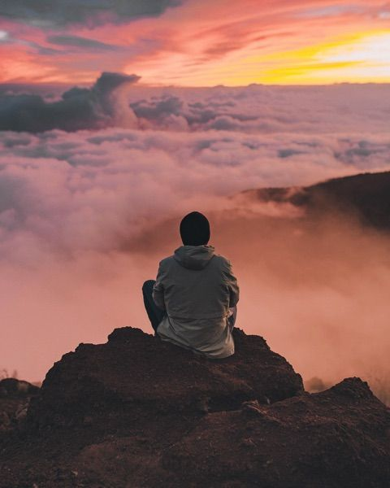
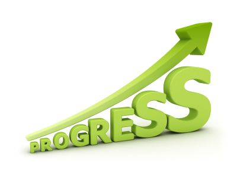

My full name is Rome Otieno Levin Ojuro. I was born on the 2nd of May 2005. Throughout my life i have been to multiple schools at the different stages in my life. I attended Rockfields Junior School from the time I set foot in a classroom and completed my primary school studies at the mentioned institution.For my Highschool education, I attended a national school in Bungoma commonly known as Friends School Kamusinga where I sat for my K.C.S.E. I am now an aspiring software engineer beginning my studies at the famous Moringa School.
I am a recent high-school leaver for the year 2023. I then proceeded to Rocky Driving School shortly after to pursue my driver's license. Afterwards I undertook a short computer fundamentals package at Maseno University(Kisumu Campus). I am a current student at Moringa School where I am following my path to becoming a software developer.
I have a couple of accomplishments throughout my life. More on the way.
Reach out to me through any of my social media platforms